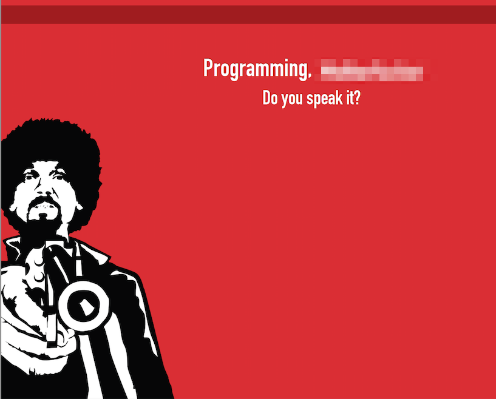

<!DOCTYPE html>
<html lang="en">
<head>
	<title>Python packaging in a nutshell</title>
	<meta charset="utf-8">
	<meta name="viewport" content="width=792, user-scalable=no">
	<meta http-equiv="x-ua-compatible" content="ie=edge">
	<link rel="stylesheet" href="styles/screen.css">
</head>
<body class="list">
	<header class="caption">
		<h1>Python packaging in a nutshell</h1>
		<p><a href="http://dizhak.com">Vasyl Dizhak</a></p>
	</header>


  <!-- Home -->
  <section class="slide  active" id="Home"><div>
  		<h2 style="margin-top: 150px">Small intro to Python packaging</h2>
  		<p>Vasyl Dizhak <a href="">@rootart</a> </p>
      <p><a href="http://moneypark.ch">MoneyPark</a>, vasyl.dizhak@moneypark.ch</p>
  	</div></section>


    <section class="slide active" id="UaPycon">
        <div>
            <figure>
               <figurecaption><a href="http://ua.pycon.org">UAPycon 2014</a>, <a href="http://www.meetup.com/uapycon/">www.meetup.com/uapycon/</a></figurecaption>
            </figure>
            
        </div>
    </section>

  <!-- IMG -->
  <section class="slide cover active" id="Cover"><div>
  		
  	</div></section>

  	<section class="slide" id="WhatIsAPackage"><div>
  		<figure>
  			<blockquote style="font-size: 1.5em; ">
  				<p>Packages are a way of structuring Python's <mark>module namespace</mark> by using "dotted module names".</p>
  			</blockquote>
  			<figcaption>An Introduction to Python
by Guido van Rossum and Fred L. Drake, Jr</figcaption>
  		</figure>
  	</div></section>
    
  	 	<section class="slide" id="WhyIShouldUseIt"><div>
  		<h2>Why I should use it?</h2>
  		<ol>
  			<li>It is the most convenient way to spread and share your work</li>
            <li class="next"><mark>PEP 20</mark>There should be one-- and preferably only one --obvious way to do it.</li>
  			<li class="next">As a package maintainer you have to use it (and yes it is old ~ <mark>1998</mark>)</li>
            <li class="next">Basically it's a way to distribute software</li>
  		</ol>
  	</div></section>

  	<section class="slide" id="Quote"><div>
  		<figure>
  			<blockquote style="font-size: 3em; ">
  				<p>Software is like s*x: it's better when it's free.</p>
  			</blockquote>
  			<figcaption>Linus Torvalds</figcaption>
  		</figure>
  	</div></section>

     <section class="slide active" id="WhatWillBeCovered"><div>
  		<h2>What we are going to do?</h2>
  		<ol>
  			<li>Have a discussion about what do you think are good and bad parts in python packaging ecosystem?</li>
            <li class="next">Quickly touch some guidelines for creating a package.</li>
  			<li class="next">Other related tools and services</li>
  		</ol>
  	</div></section>


    <section class="slide shout id="PYPI"><div>
		<h2><a href="https://pypi.python.org/pypi" target="_blank">pypi.python.org</a></h2>
	</div></section>


    <section class="slide" id="pypiInfo">
        <div>
            <h2>The Python Package Index is a repository of software for the Python programming language. <mark>45876</mark></h2>
            <ol>
                <li class="next">Fast (Fastly CDN)</li>
                <li class="next">Reliable :)</li>
                <li class="next">Secure (?)</li>
            </ol>
        </div>
    </section>


    <section class="slide" id="StartingPackaging">
        <div>
            <h2>Official guidelines?</h2>
            <ol>
                <li class="next"><a href="https://docs.python.org/3/distutils/packageindex.html">https://docs.python.org/3/distutils/packageindex.html</a></li>
                <li class="next"><a href="http://python-packaging-user-guide.readthedocs.org/en/latest/">http://python-packaging-user-guide.readthedocs.org/en/latest/</a></li>
                <li class="next">setuptools vs distutils?</li>
                <li class="next">pip vs easy_install?</li>
                <li class="next">...</li>
            </ol>
        </div>
    </section>


    <section class="slide" id="PyPA">
        <div>
            <h2>Python Packaging Authority (PyPA)</h2>
            <figure><figurecaption>PyPA is a working group that maintains many of the relevant projects in Python packaging.
                They host projects on <a href="https://github.com/pypa">github</a> and <a
                        href="https://bitbucket.org/pypa">bitbucket</a>, and discuss issues on the <a
                        href="https://groups.google.com/forum/#!forum/pypa-dev">pypa-dev mailing list</a>.
</figurecaption></figure>
        </div>
    </section>


    <section class="slide active" id="CurrentState"><div>
      <figure></figure>
      <div>The Hitchhiker's Guide to Packaging 1.0 documentation <a href="http://guide.python-distribute.org/introduction.html#current-state-of-packaging">link</a></div>
    	</div></section>


      <section class="slide cover w" id="PM"><div>
        
      	</div></section>


  	<section class="slide" id="MinimalStructure"><div>
      <h2>Minimal structure</h2>
      <pre>
        <code>
          ➜  development $ tree -L 2 VotePackage
          VotePackage
          ├── MANIFEST
          ├── README.txt
          ├── <mark>setup.py</mark>
          └── votepackage
              └── <mark>__init__.py</mark>
          2 directories, 6 files
        </code>
      </pre>
  	</div></section>
  
  
  	<section class="slide" id="MinimalSetup"><div>
      <h2>Minimal setup.py data</h2>
      <pre>
        <code style="font-size: 0.7em; line-height: 1.4em">
          from <mark>distutils</mark>.core import <mark>setup</mark>
          setup(
              name='VotePackage',
              version='0.1dev',
              author='Vasyl Dizhak',
              author_email='vasyl.dizhak@djangostars.com',
              description='Centralized system for python package voting',
              packages=['votepackage',],
              license='Simplified BSD License',
              long_description=open('README.txt').read(),
          )
        </code>
      </pre>
  	</div></section>
    

  	<section class="slide" id="MinimalSetupName"><div>
      <h2>Minimal setup.py data: <mark>name</mark></h2>
      <pre>
        <code style="font-size: 0.9em; line-height: 1.4em">
          <mark>...</mark>
          name='VotePackage'
          <mark>...</mark>
        </code>
      </pre>
      Has to be unique name.
      <pre>
        <code style="font-size: 0.9em; line-height: 1.4em">
          http://pypi.python.org/pypi/<mark>&lt;name&gt;</mark>
        </code>
      </pre>
  	</div></section>


  	<section class="slide" id="MinimalSetupPackage"><div>
      <h2>Minimal setup.py data: <mark>packages</mark></h2>
      <pre><code>
packages=<mark>['votepackage', 'votepackage.tests']</mark>
        </code>
      </pre>
        <figure>
            <figurecaption>Looking for path relative to the directory where your setup script lives.</figurecaption>
            <pre><codestyle="font-size: 0.9em; line-height: 1.4em">
                <mark>package_dir</mark> = {'': 'src/lib'}
            </code></pre>
        </figure>
  	</div></section>


  	<section class="slide" id="MinimalSetupPackageData"><div>
      <h2>Minimal setup.py data: <mark>package data</mark></h2>
      <pre><code>
setup(...,
      package_data={'votepackage': ['stats/*.json']},
      ...
     )
        </code>
      </pre>
        <figure>
            <figurecaption>All the files that match <mark>package_data</mark> will be added to the <mark>MANIFEST</mark> file if no template is provided.</figurecaption>
        </figure>
  	</div></section>


    <section class="slide" id="MinimalSetupAdditionalFiles"><div>
      <h2>Installing Additional Files</h2>
      <pre><code>
setup(...,
      <makr>data_files</makr>=[
          ('/etc/init.d', ['pypivote-server']),
          ]
      ...
     )
        </code>
      </pre>
        <figure>
            <figurecaption>Recommended way in case you may need to place data files outside of you package.</figurecaption>
        </figure>
  	</div></section>

  	<section class="slide" id="MinimalSetupVersion"><div>
      <h2>Minimal setup.py data: <mark>version</mark></h2>
      PEP 386 -- Changing the version comparison module in Distutils <a href="#">PEP 386/</a>
      <pre>
        <code style="font-size: 0.9em; line-height: 1.4em">
 >>> from distutils.version import <mark>LooseVersion</mark> as V
 >>> v1 = V(<mark>'1.0dev'</mark>)
 >>> v2 = V(<mark>'1.0.9alpha'</mark>)
 >>> v2 > v1
 >>> False
        </code>
      </pre>

      <pre>
        <code style="font-size: 0.9em; line-height: 1.4em">
$ pip install -U <mark>name</mark>
        </code>
      </pre>
  	</div></section>


  	<section class="slide" id="MinimalSetupAuthor"><div>
      <h2>Minimal setup.py data: <mark>author</mark></h2>
      People may buy you a beer <a href="www.gittip.com">www.gittip.com</a>
      <pre>
        <code style="font-size: 0.9em; line-height: 1.4em">
  <mark>author</mark>='Vasyl Dizhak',
  <mark>author_email</mark>='vasyl.dizhak@djangostars.com',
  
  
  <mark>maintainer</mark>='Vasyl Dizhak',
  <mark>maintainer_email</mark>='vasyl.dizhak@djangostars.com',
 
        </code>
      </pre>
  	</div></section>


  	<section class="slide" id="MinimalSetupDescription"><div>
      <h2>Minimal setup.py data: <mark>description</mark></h2>
      May be a first or even the <mark>only</mark> place where users will look and decide whether they will use your package.
      PYPI will render <mark>long_description</mark> with docutils reStructuredText renderer
      <pre><code>
<mark>long_description</mark>=open('README.md').read(),
        </code>
      </pre>
  	</div></section>

  	<section class="slide" id="MinimalSetupFiles"><div>
      <h2>Minimal setup.py data: <mark>MANIFEST.in</mark></h2>
          Only Python modules and packages are included in the package by default. To include additional files, we’ll need to create a MANIFEST.in file
      <pre><code>
<mark>include</mark> LICENSE
include README.rst
<mark>recursive-include</mark> votepackage/static *
recursive-include votepackage/templates *
        </code>
      </pre>
  	</div></section>

  	<section class="slide" id="MinimalSetupRequirements"><div>
      <h2>setup: <mark>requirements</mark></h2>
      <pre><code>
        <mark>install_requires</mark> = [
            'requests',
            'pycli'
        ],

        </code>
      </pre>
  	</div></section>

  	<section class="slide" id="PlatformRely"><div>
      <h2>Rely on <mark>platform</mark> or <mark>python version</mark></h2>
      <pre><code>
        if <mark>sys.version_info[:2]</mark> in ((2, 6), (3, 1)):
            # argparse has been added in Python 3.2 / 2.7
            requirements.append('argparse>=1.2.1')
        if <mark>'win32'</mark> in str(sys.platform).lower():
            # Terminal colors for Windows
            requirements.append('colorama>=0.2.4')
        </code>
      </pre>
  	</div></section>
  
  
  
  	<section class="slide" id="classifiers"><div>
      <h2>Classifiers</h2>
      PEP 301 -- Package Index and Metadata for Distutils <a href="#">PEP 0301</a>
      <pre><code style="font-size: 0.9em; line-height: 1.4em">
        classifiers=[
            'Development Status :: 1 - Planning',
            'Intended Audience :: Developers',
            'Environment :: Console',
            'Programming Language :: Python :: 2.5',
            'Programming Language :: Python :: 2.6',
            'Programming Language :: Python :: 2.7',
            'Programming Language :: Python :: 3.3'
            'Framework :: Django'
        ]
        python setup.py register <mark>--list-classifiers</mark>
        </code>
      </pre>
  	</div></section>

  	<section class="slide" id="scripts"><div>
      <h2>Console scripts</h2>
      <pre><code style="font-size: 0.9em; line-height: 1.4em">
        setup(...,
            <mark>scripts</mark>=['django/bin/django-admin.py']
         )

        <mark>entry_points</mark>={
            'console_scripts': [
                'pypivote=votepackage:main',
           ],
        </code>
      </pre>
  	</div></section>

  	<section class="slide shout" id="LeanRelease"><div>
  		<h2>
        Lean release
      </h2>
  	</div></section>
  
  	<section class="slide shout" id="Register"><div>
  		<h2 style="font-size: 3em">
        $ python setup.py register
      </h2>
  	</div></section>
  
  	<section class="slide shout" id="Upload"><div>
  		<h2 style="font-size: 3em">
        $ python setup.py <mark>sdist</mark> <mark> upload</mark>
      </h2>
  	</div></section> 

	<section class="slide" id="WhatBeenDone"><div>
    <h2>What have been done?</h2>
		<ol>
			<li>Build distributition <mark>VotePackage-0.1dev.tar.gz</mark> and upload it to PYPI</li>
			<li class="next">You could build a package for your OS <mark>bdist_wininst</mark>, <mark>bdist_rpm</mark> etc</li>
      <li class="next">You can use <mark>--repository=url</mark> for uploading package to your own cheeseshop</next>
		</ol>
	</div></section>

	<section class="slide shout" id="TestingPart"><div>
		<h2>
      Testing
    </h2>
	</div></section>

	<section class="slide" id="Tox"><div>
    <h2>Tox</h2>
    <p>Use <a href="http://testrun.org/tox/latest">tox</a> to automate package testing against different python versions</p>
    <pre>
      <code style="font-size: 0.6em; line-height: 1.4em">
        import sys
        from setuptools.command.test import test as <mark>TestCommand</mark>
        class Tox(TestCommand):
            def finalize_options(self):
                TestCommand.finalize_options(self)
                self.test_args = []
                self.test_suite = True
            def run_tests(self):
                #import here, cause outside the eggs aren't loaded
                import tox
                errno = tox.cmdline(self.test_args)
                sys.exit(errno)
      </code>
    </pre>
	</div></section>

	<section class="slide" id="Tox&setup.py"><div>
    <h2>Tox.ini & setup.py</h2>
    <pre>
      <code style="font-size: 0.6em; line-height: 1.4em">
        # content of: tox.ini , put in same dir as setup.py
        [tox]
        envlist = <mark>py25,py26,py27,py33</mark>
        [testenv]
        deps=pytest       # install pytest in the venvs
        commands=<mark>py.test</mark>  # or 'nosetests' or ...

      </code>
    </pre>
    <pre>
      <code style="font-size: 0.6em; line-height: 1.4em">
        # setup.py
        <mark>...</mark>
        tests_require=['tox'], #install tox package
        cmdclass = {'test': Tox},
      
      </code>
    </pre>
	</div></section>
  
  
	<section class="slide" id="setup.py&test"><div>
    <h2>Test your package</h2>
    <pre>
      <code style="font-size: 1em; line-height: 1.4em">
        $ python setup.py <mark>test</mark>
        <mark>...</mark>
        py27 inst-nodeps: /Users/rootart/development/
          VotePackage/.tox/dist/VotePackage-0.1dev.zip
        py27 runtests: commands[0]
        <mark>...</mark>
        py25: commands succeeded
        py26: commands succeeded
        py27: commands succeeded
        py33: commands succeeded
        congratulations :)
      </code>
    </pre>
	</div></section>


    
	<section class="slide" id="AutomateTesting"><div>
    <h2>Use CI system for constant builds </h2>
    <ul>
      <li>https://travis-ci.org/</li>
      <li>https://www.shiningpanda-ci.com/</li>
      <li>http://jenkins-ci.org/</li>
      <li>http://trac.buildbot.net/</li>
      <li>...</li>
    </ul>
	</div></section>


	<section class="slide shout" id="AsAUser"><div>
		<h2>
      As a user
    </h2>
	</div></section>

	<section class="slide" id="PIPUsage"><div>
    <h2>PIP & virtualenv</h2>
    <pre>
      <code style="font-size: 1em; line-height: 1.4em">
        $ virtualenv <mark>env</mark>
        $ pip <mark>install/uninstall</mark> package
        $ pip <mark>freeze</mark> > requirements-dev.txt
        $ pip install <mark>-r</mark> requirements-dev.txt
        $ pip install ... -M (--mirrors) #PEP-381
        $ pip install <mark>-e</mark> git/hg/svn
        $ pip list -o #get outdated packages
      </code>
    </pre>
	</div></section>
  
	<section class="slide" id="PIPConfiguration"><div>
    <h2>PIP useful configuration options</h2>
    <pre>
      <code style="font-size: 1em; line-height: 1.4em">
        # $HOME/.pip/pip.conf
        [global]
        timeout = 60
        index-url = http://local.cheeseshop/
        <mark>download_cache</mark> = ~/.cache/pip
      </code>
    </pre>
	</div></section>

	<section class="slide" id="WheelPackages"><div>
    <h2>The Wheel Binary Package Format </h2>
    <a href="#">PEP 427</a>, <a href="http://pythonwheels.com/">pythonwheels.com/</a>
    <pre>
      <code style="font-size: 1em; line-height: 1.4em">
python setup.py <mark>bdist_wheel</mark> --universal
          ....
pip wheel --wheel-dir=/local/wheels -r requirements.txt
pip install --no-index --find-links=/local/wheels \
          -r requirements.txt
      </code>
    </pre>
	</div></section>


    <section class="slide" id="Twine"><div>
    <h2>Twine is a utility for interacting with PyPI</h2>
    <a href="https://pypi.python.org/pypi/twine">pypi/twine</a>
        <figure>
            <figurecaption><ol>
                <li>Verified HTTPS Connections</li>
                <li>Uploading doesn't require executing setup.py</li>
                <li>Uploading files that have already been created, allowing testing of distributions before release</li>
                <li>Supports uploading any packaging format (including wheels)</li>
            </ol></figurecaption>
            <pre><code><mark>twine</mark> upload dist/*</code></pre>
        </figure>
	</div></section>

	<section class="slide shout" id="Future"><div>
		<h2>
      Future of python packaging
    </h2>
	</div></section>

	<section class="slide" id="FutureList"><div>
    <h2>Future of python packaging</h2>
    <ol>
      <li>standalone setup tool that install and uninstall packages</li>
      <li class="next">metadata will be available outside of Python file in <mark>setup.cfg</mark></li>
      <li class="next">already in Python 3 as a <mark>setuptools</mark></li>
      <li class="next">pre-releases</li>
      <li class="next">PEP 426</li>
    </ol>
	</div></section>

  
	<section class="slide" id="Distutils2"><div>
    <h2>Some of the distutils2 features</h2>
    <a href="#">PEP 426</a>
    <pre>
      <code style="font-size: 1em; line-height: 1.4em">
        Requires-External: C
        Requires-External: <mark>libpng (>=1.5)</mark> #PIL :)
        
        <mark>Requires-Dist</mark> package; python_version == '2.5'
        
        <mark>Obsoletes-Dist</mark>: OtherProject (<3.0)
      </code>
    </pre>
	</div></section>


   <section class="slide" id="PIPPY34"><div>
    <h2>Say hello to PIP (PEP 453)</h2>
       <figure>
           <figurecaption><mark>PIP</mark> is a part of standard library from python 3.4</figurecaption>
       </figure>
	</div></section>

    <section class="slide" id="Warehouse">
        <div>
        <h2>Python Warehouse</h2>
        <figure>
            <figurecaption>
                <ul>
                    <li><a href="https://warehouse.python.org/">https://warehouse.python.org/</a> (create.io in the past)</li>
                </ul>
            </figurecaption>
        </figure></div>
    </section>
	<section class="slide" id="Follow"><div>
    <ol>
      <li>KISS</li>
      <li class="next">Follow a standards</li>
      <li class="next">Use best practices of virtualenv/pip</li>
      <li class="next">Read PEPs and lookout for new changes in distutils2</li>
      <li class="next">Share your experience</li>
      <li class="next"><a href="http://packaging.python.org">http://packaging.python.org</a></li>
    </ol>
	</div></section>

	<section class="slide shout" id="Thanks"><div>
		<h2>
      Thank you!
    </h2>
	</div></section>

	<section class="slide shout" id="Questions"><div>
		<h2>
      Question?
    </h2>
	</div></section>

	<p class="badge"><a href="https://github.com/rootart/zurich-python-meetup-packaging">Fork me on Github</a></p>
	<!--
		To hide progress bar from entire presentation
		just remove “progress” element.
		-->
	<div class="progress"><div></div></div>
	<script src="shower.js"></script>
	<!-- Copyright © 2013 Yours Truly, Famous Inc. -->
</body>
</html>